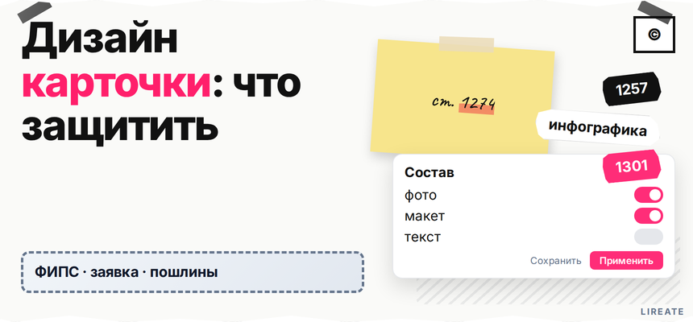
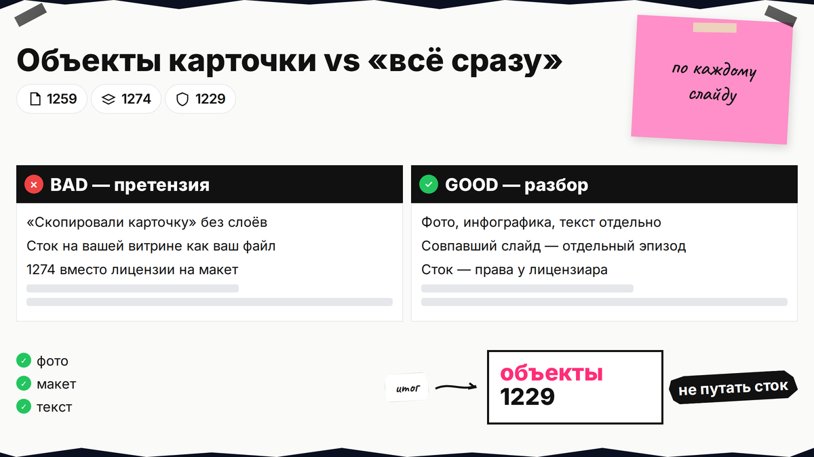
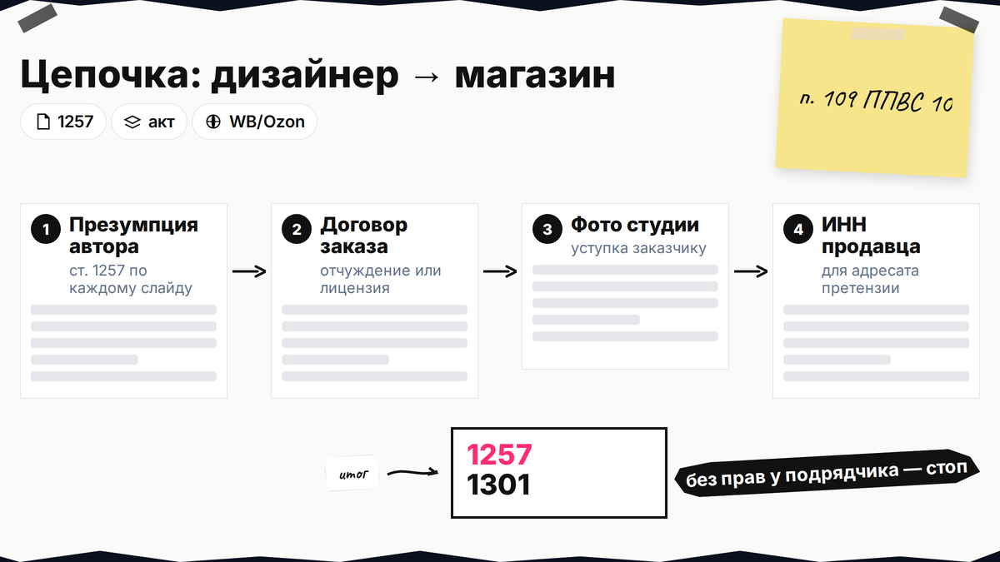
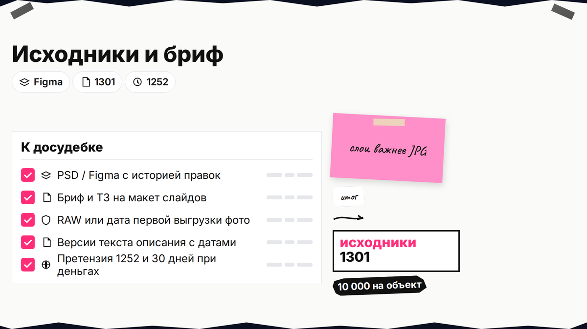

Украли дизайн карточки товара: на Wildberries или Ozon лежит почти зеркальная подача - те же блоки инфографики, порядок слайдов и даже подписи. Без разделения объектов вы рискуете требовать то, что суд не отнесёт к охраняемым произведениям, или смешать фото, макет и текст в один "эпизод". Сначала выпишите, что именно творческое: инфографика, композиция слайдов, ваши снимки, отдельно - описание. Затем зафиксируйте чужую карточку, соберите исходники из Figma или Photoshop и двигайтесь по претензии и ст. 1301 ГК РФ. Ниже - маршрут продавца и заказчика дизайна. 27.11.2026; не замена индивидуальной консультации.

TL;DR / Быстрый инсайт: Карточка - это набор объектов: снимки (как в гайде по фото), графический макет и текст. Исключительное право без регистрации (ст. 1229), использование без согласия - воспроизведение и доведение до всеобщего сведения (п. 2 ст. 1270). "Вдохновиться" чужой инфографикой в рекламе - не ст. 1274: свободное использование по ст. 1274 не заменяет лицензию на чужой коммерческий макет. Перед письмом - скрин карточки с URL и временем; претензия с компенсацией между ЮЛ/ИП - п. 5.1 ст. 1252, 30 дней. Иск - в материале защита ИС в суде.
Часть элементов карточки конкурент мог взять законно: стоковое фото по лицензии, типовой шрифт, общие характеристики товара. Спор начинается там, где повторили ваш творческий макет, уникальные иконки, схему слайдов или ваши снимки. Формулировку "недобросовестная конкуренция" оставьте на отдельный сценарий - здесь фокус на авторском праве по ГК РФ.

Разложите карточку на слои. Фотографии - отдельные произведения (п. 4 ст. 1259). Инфографика и композиция слайдов - графические работы: цветовые акценты, иконки, сетка, порядок блоков. Текст описания - литературное произведение, если он не сводится к сухому перечню из ГОСТ без творческой подачи. Название товара и голый список "материал - хлопок" обычно слабее как объект AP, но может пересекаться с товарным знаком - это другая ветка.
| Элемент карточки | Часто охраняется AP | Типичный риск при копировании |
|---|---|---|
| Ваши предметные фото | Да | Полное или фрагментарное копирование файла |
| Инфографика, иконки, макет WB/Ozon | Да, при творческой доработке | Зеркальный набор слайдов |
| Описание с уникальными формулировками | Часто да | Копипаст без переработки |
| Чужой сток на вашей карточке | У стока - у лицензиара | Нельзя требовать за чужой файл |
| Стандартные пиктограммы площадки | Нет / у площадки | Не включайте в претензию |
Сделайте визуальное сравнение: отметьте совпадающие слайды. Если совпала одна плашка - требование строится на ней, не на "всей карточке".
Делайте: таблицу "объект - файл - автор - оригинал". Не делайте: писать "скопировали бренд" без конкретных произведений.

Исключительное право у автора; презумпция - ст. 1257 и п. 109 ППВС № 10. У фрилансера смотрите договор авторского заказа: переданы ли права, есть ли акт. Фото студии без уступки вам - требовать можете только по объектам, которые юридически ваши. Отсутствие разрешения в открытой карточке не даёт конкуренту права копировать по ст. 1229.
Компенсация - ст. 1301; срез подписи автора с инфографики - ст. 1300. В претензии укажите продавца с карточки (ИНН на площадке) или рекламодателя.
Делайте: цепочку "автор - договор - магазин" по слайдам. Не делайте: иск без прав, оставшихся у подрядчика.

На макет: PSD, Figma, слои, бриф, акт. На фото - RAW/JPEG и дата первой выгрузки. На текст - версии с датами. Только JPG в кабинете WB без исходника суду обычно слабее.
Скрин кабинета с датой и артикулом, лицензия на ваш сток. Делайте: папки "макет" и "фото/текст". Не делайте: отдавать единственный мастер-файл до конца спора.
После письма карточку часто снимают - как в гайде по фото. П. 55 ППВС № 10: скрин с URL, артикулом, продавцом, временем; все слайды, не один кадр. Сохраните и свою карточку на ту же дату. Один макет на WB и в VK в одной кампании - часто одно нарушение (п. 22 Обзора ВС).
Проверьте, что на скринах виден маркетплейс и артикул. Делайте: фиксируйте до первого сообщения конкуренту или жалобы. Не делайте: полагаться на кроп без адреса и артикула.
Досудебный порядок: при требовании убытков или компенсации к ЮЛ/ИП в арбитраже - претензия и 30 дней по п. 5.1 ст. 1252. Требование прекратить использование можно заявлять отдельно. В письме: кто правообладатель, перечень произведений (слайд 3 - инфографика, слайд 5 - фото и т.д.), ссылки на чужую карточку, требование снять или заменить, выбранный способ по п. 1 ст. 1301 на каждый объект (10 000 - 10 000 000 руб., 2× лицензия или 2× экземпляры), срок ответа, приложения. Для прекращения без денег от физлица порядок иной - см. защита в суде.
Схема: объекты карточки → права и исходники → фиксация чужой карточки → претензия → 30 дней → иск по маршруту L74
На эпизод - один способ по п. 59 ППВС № 10. Прайс за макет или договор со студией; завышение - риск снижения. Проверьте письмо по логике ответа на претензию.
| Объект в карточке | Типичный способ по ст. 1301 | Что приложить |
|---|---|---|
| Инфографика | Твёрдая компенсация или 2× прайс за макет | Договор со студией, похожие расчёты, скрин сравнения слайдов |
| Предметное фото | 2× лицензия или компенсация | Маршрут как в L85: EXIF, первая публикация |
| Текст описания | Компенсация соразмерно объёму копипаста | Версии текста с датами, diff с чужим описанием |
После отказа или молчания - иск с претензией, фиксацией, авторством и расчётом. Приложите таблицу сопоставления слайдов: номер, ваш файл, скрин чужой версии, способ компенсации. Подсудность и пошлина - в гайде по суду; прекращение и деньги можно совместить, если доказательства держатся.
Несколько SKU или спор и по фото, и по макету - имеет смысл сверить пакет с юристом: услуги Лирейт, контакты.
Материал проверен: редакция Лирейт, практика споров по контенту маркетплейсов и графическим макетам.
Достоверность данных: ст. 1229, 1250, 1252, 1257, 1270, 1274, 1300, 1301 ГК РФ (ред. с 04.01.2026), ППВС № 10 п. 55, 59, 61-62, Обзор ВС 29.05.2024 сверены с КонсультантПлюс на 27.11.2026. Кластер A32.
Реже, чем кажется: чаще спорят по отдельным слайдам, фото и тексту. Сборник возможен, если доказан единый творческий замысел всего комплекта, но на практике удобнее дробить требования по объектам и не смешивать стоковые и фирменные элементы в одну строку иска.
Да. Графический дизайн слайдов - самостоятельный объект при творческом вкладе. Фото защищаются отдельно по тем же нормам, что в L85.
Да, если описание не сводится к общеизвестным характеристикам и содержит ваши формулировки. Пустой перечень параметров слабее; уникальные обороты и структура текста - сильнее.
Один конкурент и один связанный комплект на одном артикуле чаще даёт один эпизод на объект. Несколько артикулов с тем же макетом могут дать несколько эпизодов - оценивайте по фактам и п. 22 Обзора ВС.
Нет для обычного авторского права: охрана с момента создания. Регистрация в Роспатенте имеет смысл для промышленного образца или товарного знака - другие институты.
Да при требовании компенсации или убытков от ЮЛ/ИП в арбитраже - п. 5.1 ст. 1252 и 30 дней. Для требования только прекратить использование эта пауза не всегда обязательна по этому пункту.
Опирайтесь на скрины, нотариальный протокол и переписку - связка "было - кто - когда".